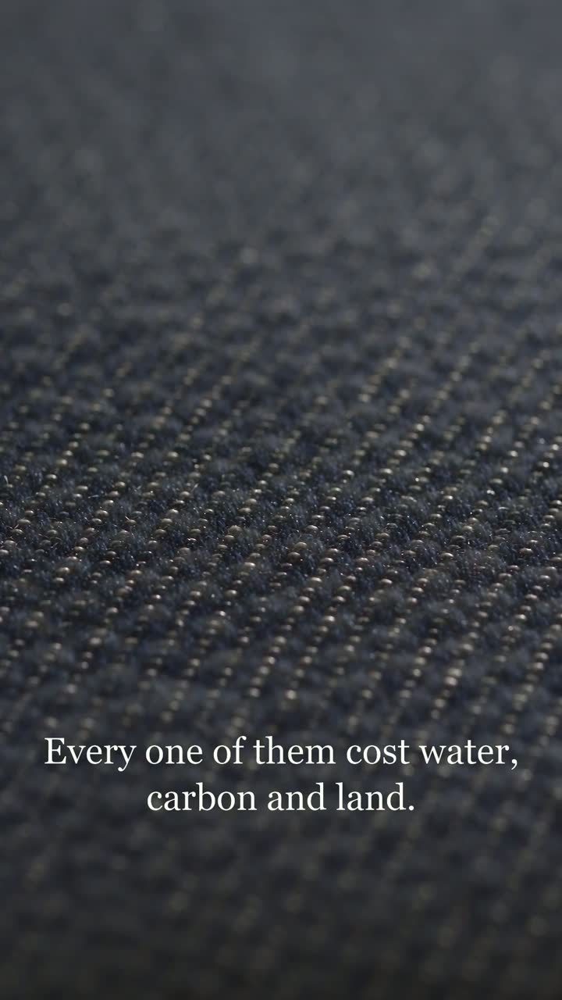
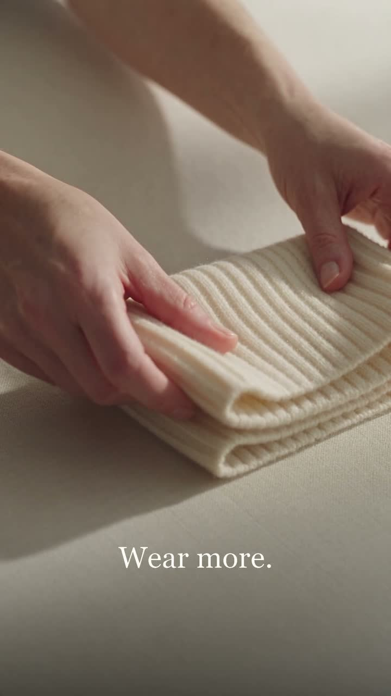

Creative direction & storytelling · Sept 2026
Loop
A digital wardrobe app. You add the clothes you already own, each one gets a sustainability score, and before buying something new you ask: should I buy this?



Stills and the opening of the 43-second film, and the landing page.
The problem
The most sustainable piece of clothing is usually one you already own. But at the moment of buying, nobody checks what's already in the wardrobe.
What the app does
- Your wardrobe, digitised. Add what you own; every garment gets a sustainability score.
- "Should I buy this?" A potential purchase is compared against what you already have before you spend.
- Plain-language search. "Black clothes for work", "something for 15°C".
- Duplicates by function. It spots that you already own something that does the same job, not just something in the same category.
The scoring model
Every environmental figure is calculated from a fixed factor table covering fibre, origin and category. Nothing is invented at runtime, and each score is marked "Verified" or "AI estimated" so a guess is never shown as fact.
Seven weighted dimensions, out of 100:
- Material22
- Carbon20
- Durability18
- Water13
- Manufacturing10
- End of life9
- Care8
What I built
The team set the brief and wrote the product spec. I turned it into things the jury could hold:
- The app, working rather than mocked: the scoring engine, search, duplicate detection, and a scan flow that rescores live.
- The marketing site, in the same single file, with a guided demo reel.
- The film: a 43-second vertical advert.
- The pitch, delivered to the jury. Everything ran offline, so nothing could fail in the room.
What the film says
- "You own about 60 garments."
- "Every one of them cost water, carbon and land."
- "Wear more."
- "Buy smarter."
Four lines, from the stills above: the problem, the cost, then the change in behaviour the app asks for.
The result
Top three at the EDHEC Sustainability Challenge, September 2026. The fixed factor table was our answer to the jury's responsible-AI criterion.
The live app is the self-contained file built for the pitch.